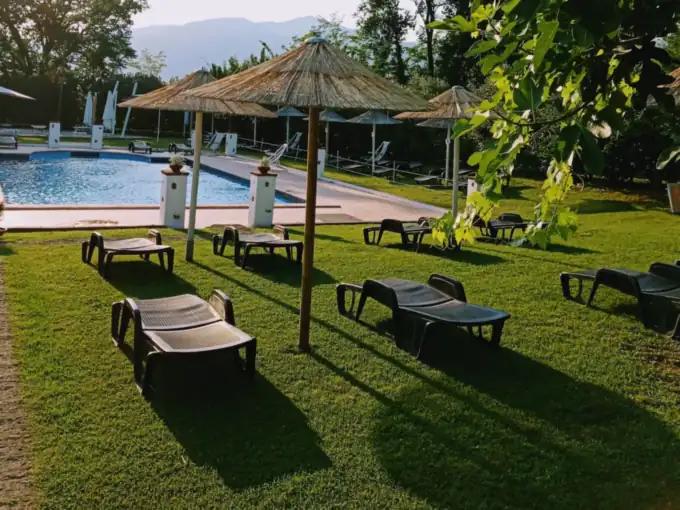
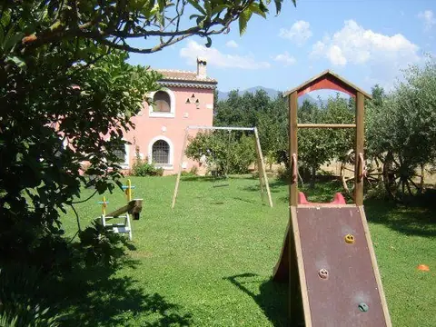
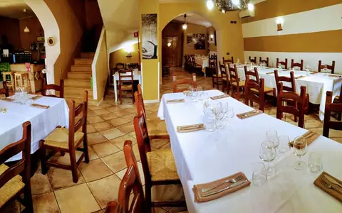
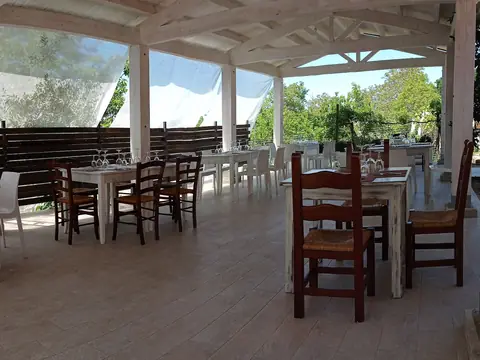
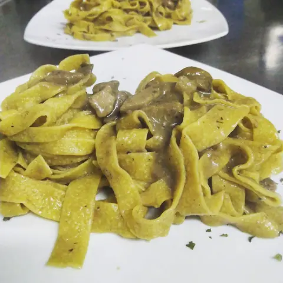
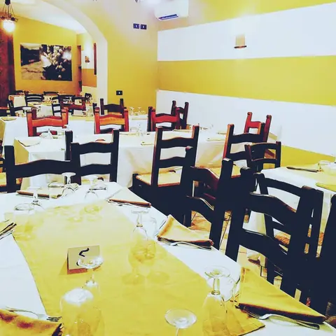
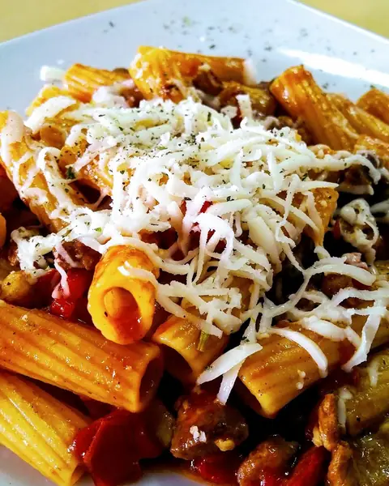
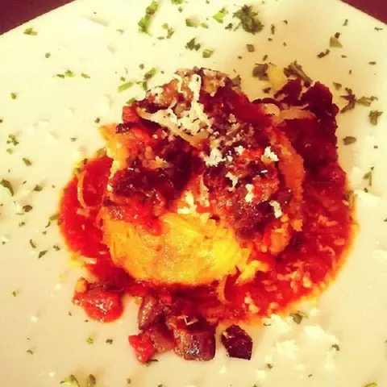
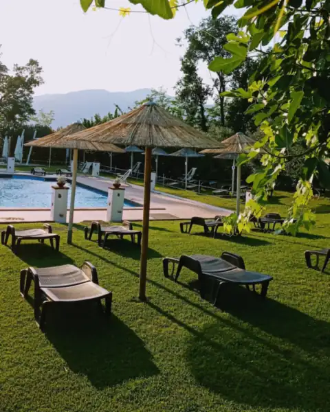

Piscina
Ombrelloni di paglia e lettini sul prato, con il Matese di fronte. Orari e costo: [DA CONFERMARE]
Agriturismo · San Potito Sannitico (CE)
Cavatelli di Mamma Mena, salumi di casa e carne alla brace, ai piedi del Matese. Il menù completo costa 35 € a persona, con acqua, vino e caffè compresi.

35 €menù completo
bevande incluse
Fuori dalla sala
Tra un piatto e l'altro c'è un prato intero da girare. Ecco cosa li aspetta mentre voi finite il caffè.
Ombrelloni di paglia e lettini sul prato, con il Matese di fronte. Orari e costo: [DA CONFERMARE]

Altalene e scivolo in giardino, davanti alla casa.
Spazio per correre all'ombra degli alberi, e per il riposino di chi ha mangiato troppo.
Gli animali della masseria, da andare a salutare dopo pranzo. Quali: [DA CONFERMARE]
Un campo da calcetto per la partita tra cugini, prima del dolce.

Occasioni speciali
Ci dite quanti siete e cosa festeggiate, noi vi proponiamo il menù.
Camere sempre disponibili, per chi viene da lontano o vuole un fine settimana nel verde del Matese. Numero di camere, servizi e prezzi: [DA CONFERMARE]
Le foto






Foto pubblicate dalla masseria su Google Maps, Facebook e sul sito attuale.
Recensioni
«Il cibo è ottimo, preparato con prodotti genuini e di loro produzione, che fanno davvero la differenza.»
«Abbiamo mangiato benissimo, pasta fresca buonissima […] tiramisù ottimo. Ritorneremo sabato con amici.»
«Una sala interna, rustica e familiare col camino acceso che crea una bella atmosfera.»
Dove siamo
Via Querce dei Monaci
81016 San Potito Sannitico (CE)
Come arrivare: [DA CONFERMARE]
Orari esatti di pranzo e cena: [DA CONFERMARE]
Scriveteci quanti siete, quanti bambini e a che ora arrivate: vi confermiamo il tavolo su WhatsApp.